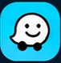
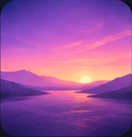

Waze réduit à gauche.Vos commandes à droite.

Paramétrez l’application à l’arrêt. Le décor reprend la maquette. Les données affichées proviennent des services connectés.
RoadDeck ne démarre pas la radio tout seul au démarrage. Aucun accès GPS n’est demandé : la ville météo est choisie manuellement.
Android attribue une partie de l’écran à Waze et l’autre à RoadDeck. Waze adapte sa carte à sa fenêtre ; les commandes RoadDeck ne recouvrent plus la navigation.
Activez l’assistant RoadDeck dans les réglages d’accessibilité, puis revenez ici.
L’assistant utilise l’action d’écran partagé d’Android pour placer les deux applications. Son activation se fait dans les réglages d’accessibilité. Aucun Shizuku ni accès root n’est demandé.
L’autoradio doit proposer l’écran partagé. Android contrôle la séparation et la largeur des deux parties ; elles ne peuvent pas être imposées par un réglage RoadDeck. Si le système refuse ce mode, un message explique le blocage.
Le bouton « Waze en grand » ferme les commandes et redonne l’écran à la navigation. Configurez et vérifiez la disposition à l’arrêt.
Message « L’accès a été refusé à cette appli » : Infos de l’appli → menu ⋮ → Autoriser les paramètres restreints, puis activez RoadDeck dans Accès aux notifications. Cette autorisation peut exposer des notifications sensibles. Elle ne sert pas à intégrer Waze.
Les comptes, recherches et téléchargements restent dans Spotify, Deezer ou votre lecteur. RoadDeck reprend leur session multimédia : titre, pochette et commandes disponibles.
Activez RoadDeck dans « Accès aux notifications ». Le code ne lit pas le contenu des messages et ne transmet pas les notifications. Démarrez une première lecture dans l’application choisie.
Si Android bloque cette autorisation pour un APK installé manuellement, consultez les informations de l’application et l’option système « Autoriser les paramètres restreints » lorsqu’elle est proposée.
La radio attend le remplissage de ce tampon avant de démarrer. Une réserve de 30 secondes peut demander environ 30 secondes d’attente et de décalage pour un direct. Le tampon se remplit réellement, il n’est pas fictif.
Ce tampon en mémoire amortit seulement les coupures plus courtes que sa réserve. Il ne permet pas de recevoir une émission future sans réseau. Les flux HLS utilisent un démarrage limité à 8 secondes pour rester compatibles avec les fenêtres de direct courtes.
Lecteur Android Media3. Annuaire Radio Browser. Favoris locaux. Reconnexion automatique sur les erreurs réseau récupérables. Les réglages du tampon s’appliquent au prochain démarrage de la station.
Exécution d’une scène Tuya « Exécuter / Tap-to-Run ». Le compte Tuya de l’application doit être lié à votre projet Cloud avec les droits nécessaires.
Le test liste les scènes, sans ouvrir le portail. Le secret est chiffré sur l’appareil avec Android Keystore. Une commande acceptée ne prouve pas la position réelle du portail.
Choisissez une ville. Actualisation toutes les 15 minutes. En l’absence de réseau, l’heure de la dernière donnée reste affichée.
Données Open-Meteo, attribution CC BY 4.0. Pas de clé API pour l’usage non commercial prévu par ce projet.
Waze à gauche ; commandes RoadDeck à droite ; sessions musicales Android ; radio native ; API Tuya et Open-Meteo.
L’affichage dépend de la prise en charge de l’écran partagé par l’autoradio. Les tests d’interface utilisent une passerelle Android simulée ; ils ne constituent pas un essai de navigation sur votre appareil.
Diagnostic disponible dans l’application Android.
Aucune publicité, aucun suivi publicitaire, aucun serveur RoadDeck. Les services sélectionnés reçoivent les requêtes nécessaires à leur fonctionnement. Waze, Spotify, Deezer et Tuya restent des applications tierces indépendantes.